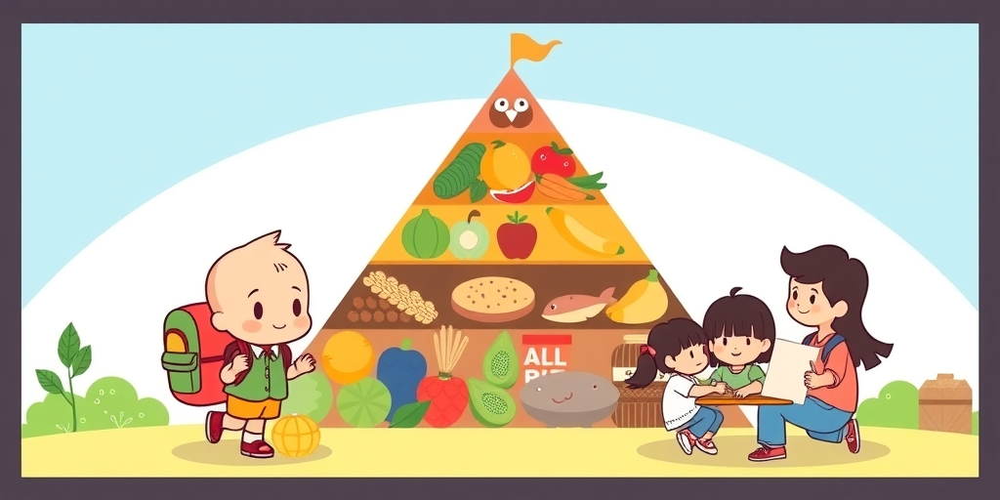
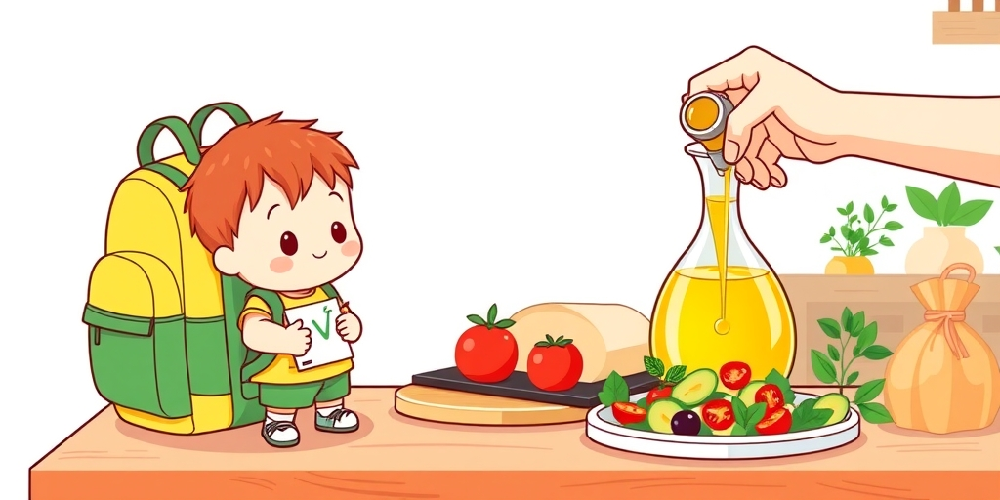
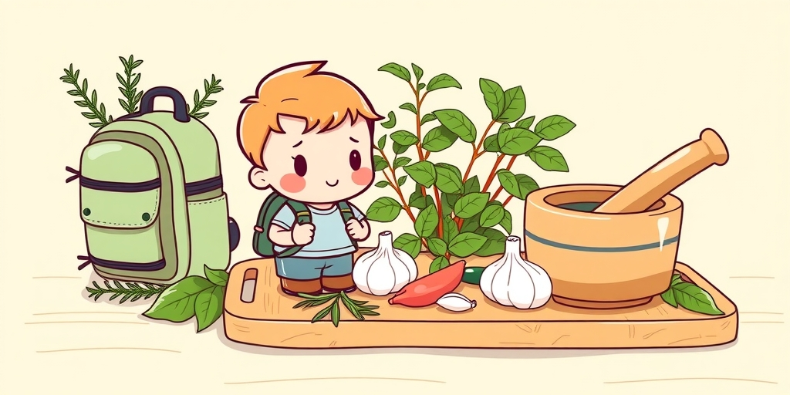
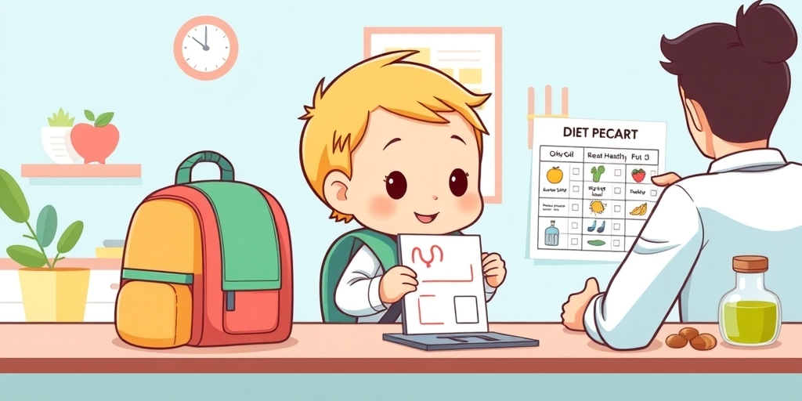
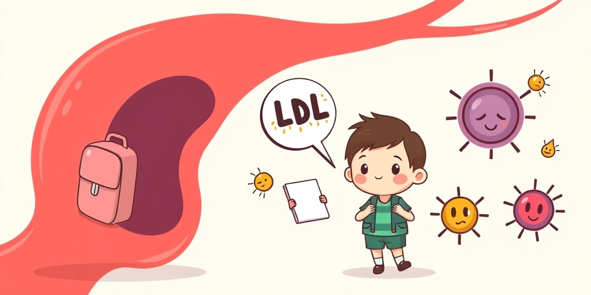
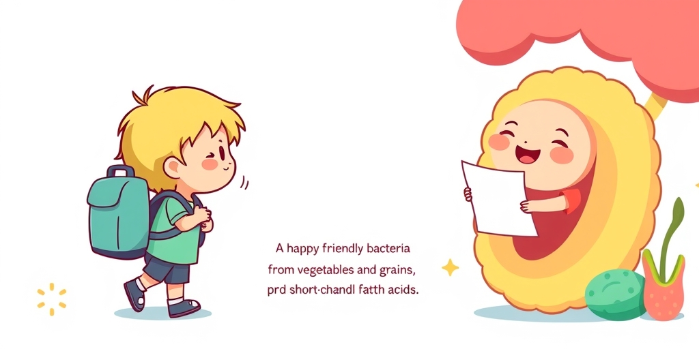
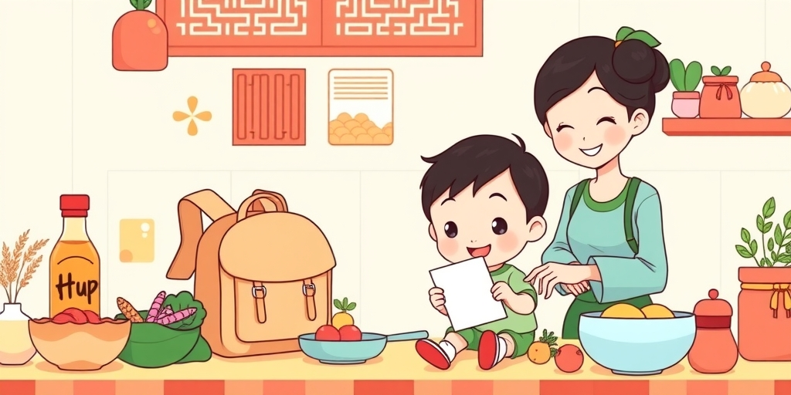

小汪老师的成长洞察 · 属于你的成长专栏
一个96岁的克里特岛老头，每天在橄榄树下捡果子，中午喝扁豆汤，晚上吃烤鱼和蔬菜。他没有吃过任何保健品，也没有数过卡路里。但他活过了大部分现代人。1958年，一个美国人来到岛上，用二十年数据证明：这种吃了三千年的日常，正是人类已知最健康的饮食模式。
1958年，安塞尔·凯斯第一次踏上克里特岛。他不是来度假的。这个美国营养学家带着一个疑问：为什么美国心脏病死亡率飙升，地中海沿岸的人却很少死于心脏病？他在岛上遇到一个96岁的老农。老头每天早上去橄榄树旁捡掉下来的果子。中午喝一碗扁豆汤，配一片淋了橄榄油的全麦面包。下午去村里走一圈，跟邻居打牌。晚上跟女儿一家吃烤鱼和蔬菜，喝一小杯自酿葡萄酒。
他没有吃过任何保健品，也没有数过卡路里。他的饮食，和三千年前祖先吃的几乎一模一样。凯斯在岛上住了下来，收集了数百人的饮食数据，开始了一场持续二十年的追踪。这场追踪最终证明：这种吃了三千年的日常，正是人类已知最健康的饮食模式。地中海饮食不是被设计出来的。它是一整个地区几千年来人就这么吃的。现代人花了几十亿美元研究出来的最健康饮食，正是克里特岛上一个老农每天在做的日常。

地中海饮食是一套完整的饮食结构，可以看作一个金字塔。底层是每天都要大量吃的：蔬菜、水果、全谷物、豆类、坚果、橄榄油。中层是每周吃几次的：鱼类和海鲜每周至少两次，禽肉和蛋每周几次，奶酪和酸奶每天或每周几次。顶层是极少吃的：红肉不超过每周一两份。甜点和含糖饮料被推到金字塔之外，只在特别场合偶一为之。葡萄酒是可选部分，如果要喝，在正餐间少量饮用，每天一杯左右，不空腹喝，不超量喝。
很多人以为地中海饮食就是多吃橄榄油。这没错，但远远不够。地中海饮食的核心，是整个饮食结构的调整。从以红肉和黄油为主的脂肪来源，转向以橄榄油和鱼类为主的脂肪来源。从精制碳水转向全谷物。从加工食品转向天然食材。这些转变加在一起，才是它的真正力量。

传统西方饮食的脂肪来自黄油、猪油、牛油，饱和脂肪占比高。地中海饮食的脂肪几乎全部来自橄榄油，单不饱和脂肪酸占比极高，加上海鲜中的omega-3。这个脂肪来源的替换，是地中海饮食在心血管保护上最核心的机制之一。
橄榄油在地中海地区，用法远比炒菜油丰富。它被直接淋在面包上、拌进沙拉里、滴在烤蔬菜上。它的存在是全餐覆盖的。特级初榨橄榄油还含有大量的多酚类化合物，比如羟基酪醇。这些物质是极强的抗氧化剂，能保护血液中的低密度脂蛋白不被氧化。氧化了的低密度脂蛋白才是动脉粥样硬化的真正启动者。所以橄榄油的好处，除了好脂肪，还有额外附带的抗氧化保护。

地中海饮食用大量迷迭香、百里香、罗勒、大蒜来调味。它们的角色远不止调味品。这些香草和蒜本身就是浓缩的抗氧化剂和抗炎化合物库。迷迭香里的迷迭香酸，大蒜里的硫化物，罗勒里的丁香酚，每一种都是天然的生物活性物质。
在现代保健品市场里，这些化合物被提取出来，装进胶囊，卖得很贵。但在地中海饮食里，它们是常规配置，每天随餐摄入。更重要的是，这些香草和蒜与橄榄油一起使用时，能帮助脂溶性的抗氧化物质更好地被吸收。这又是一套自然演化出来的协同效应，没有任何刻意设计的痕迹。
地中海饮食传统里，吃饭是社交。家人坐在一起，一顿饭吃很久。饭后散步是日常。运动融在生活里，走路去市场、爬楼梯、在自家院子里干活。现代人把运动单独抽出来叫锻炼，地中海人把它穿在一天的所有缝隙里。
这种慢节奏的进食方式本身就有生理学意义。细嚼慢咽让饱腹感信号有足够时间传递到大脑，避免过量进食。家人共餐带来的心理放松，降低了压力激素水平。压力激素皮质醇会直接升高血糖和血压，长期高水平的皮质醇是代谢综合征的重要推手。地中海饮食的健康效果，一部分来自食物，另一部分来自吃食物的方式和环境。
安塞尔·凯斯在1950年代注意到一个现象：美国中产阶级的心脏病发病率在飙升，但欧洲一些地区，特别是希腊的克里特岛，心血管死亡率出奇地低。他决定跟踪七个国家一万两千多名中年男性几十年的饮食和健康数据。这七个国家包括美国、芬兰、荷兰、意大利、南斯拉夫、希腊、日本。这就是著名的七国研究。
结果在1970年发表：地中海沿岸国家的心血管死亡率远低于美国和北欧国家，差距高达数倍。凯斯发现，饱和脂肪的摄入量与心脏病死亡率呈强正相关。而地中海饮食中饱和脂肪极低，单不饱和脂肪极高。这个结论在当时是颠覆性的。凯斯没有停留在相关性上，他推动了后续的干预试验。

七国研究之后，验证实验一个接一个。最著名的叫PREDIMED，西班牙2013年发表的随机对照试验。约7500名高风险心血管疾病患者被分成三组：地中海饮食加橄榄油、地中海饮食加坚果、对照组低脂饮食。试验在中途被伦理委员会下令停止。因为两个地中海饮食组的心血管事件发生率显著低于对照组。继续让对照组吃低脂饮食，在伦理上已经说不过去了。
还有一个更早的实验，1994年的里昂心脏饮食研究。605名第一次心脏病发作后的存活者，改吃地中海饮食后，心脏死亡率和复发率降低了65%。这个数字大到让很多医生一开始不敢相信。两项试验用不同的设计、在不同的人群中，得出了同一个结论：地中海饮食能硬碰硬地降低心血管事件。

橄榄油里的单不饱和脂肪酸直接降低低密度脂蛋白，同时提高高密度脂蛋白。但更关键的是，单不饱和脂肪酸不容易被氧化。氧化了的胆固醇才真正对血管壁有攻击性。
你可以把低密度脂蛋白想象成一辆辆运输车。它们本身是负责运送胆固醇的运输工具，并无好坏之分。但如果运输车被氧化了，就会撞向血管壁，引发炎症和斑块。橄榄油里的多酚类化合物就是运输车的防锈涂层。它们保护了低密度脂蛋白不被氧化。传统饮食中大量的饱和脂肪和精制碳水，会促进氧化反应。地中海饮食的这一重保护是双重的：减少坏胆固醇的数量，同时保护剩下的胆固醇不变坏。
精制碳水引发血糖剧烈波动，胰岛素飙升，进而触发持续性低度炎症。地中海饮食用全谷物替代精制碳水，血糖波动平缓。深海鱼提供omega-3脂肪酸，omega-6促炎，omega-3抑炎。现代加工食品饮食中，omega-6与omega-3的比值常高达20:1甚至更高。而地中海饮食的这个比值接近4:1，更接近人类进化过程中的饮食比例。
慢性低度炎症是许多现代病的共同土壤：动脉粥样硬化、胰岛素抵抗、阿尔茨海默病、甚至某些癌症。地中海饮食通过降低血糖波动和优化脂肪酸比例，从源头上减少了炎症信号的触发。这种抗炎效果，是整套饮食模式共同作用的结果，无法归功于单一食物。

地中海饮食每天摄入的蔬菜、水果、豆类、坚果品种极其多样。每一种植物都含有一套独特的植物化学物质。蓝莓里的花青素，番茄里的番茄红素，十字花科里的硫代葡萄糖苷，香草里的迷迭香酸。这些化合物单独拿出来卖就是天价保健品。但在地中海饮食里，它们是常规配置，每天几十种植物多酚在血液里同时工作。
更重要的是，这些多酚之间有巨大的协同效应。多酚可以再生彼此，形成一套抗氧化网络。维生素C能帮助维生素E再生，某些类黄酮能保护维生素C不被破坏。单独吃一种补充剂，得不到这套协同网络。这解释了为什么很多抗氧化补充剂的临床试验结果令人失望，而富含这些化合物的天然饮食却能降低疾病风险。

地中海饮食里的全谷物、豆类、蔬菜，全部都是肠道菌群的可发酵底物。它们提供的可溶性纤维和抗性淀粉在小肠里不被消化，进入大肠后被双歧杆菌和乳酸杆菌发酵成短链脂肪酸。丁酸盐、丙酸盐、乙酸盐，这三种短链脂肪酸是肠道健康的基石。
丁酸盐是大肠上皮细胞的首选能量来源，直接给肠道屏障提供营养。它还穿过肠壁进入血液，下调炎症基因的表达。精制碳水和加工食品里几乎没有这些可发酵底物。肠道菌群没有东西吃，就会转而侵蚀肠道黏液层，导致肠漏和全身炎症。地中海饮食等于每天都在给好细菌送饭，让它们产生保护性物质。这就是人类吃了上万年的东西，一种天然的益生元供应模式。
地中海饮食的精髓在于饮食模式，不在于特定食材。中国的茶籽油和菜籽油同样富含单不饱和脂肪酸。茶籽油的单不饱和脂肪酸含量甚至高于橄榄油。深海鱼可以用中国沿海的新鲜鱼替代。豆类不需要找鹰嘴豆，黄豆、黑豆、白扁豆的纤维和植物蛋白密度跟鹰嘴豆在同一量级。
全谷物方面，小米、糙米、燕麦、荞麦都是极好的选择，替代白米饭。蔬菜水果方面，中国菜市场的品种丰富程度不输地中海沿岸。关键是四个核心原则：脂肪来源以单不饱和和多不饱和为主；蛋白质来源以植物和鱼类为主，红肉少；碳水来源以全谷物为主；每天十种以上不同颜色的蔬菜水果。这四条在中国的超市和菜市场里全部做得到。地中海饮食的本质，是一种前工业时代的饮食模式，与地理位置无关。
你不需要飞到爱琴海。但你可以明天早上把白米饭换成小米粥，在菜里多放一勺油茶籽油。地中海饮食的精髓，是吃你祖先的祖先几千年一直在吃的东西。你的祖先不吃精制碳水，不喝含糖饮料，不买加工零食。他们吃的是地里长出来的、树上结出来的、海里捞上来的东西。
地中海饮食之所以被科学验证为最健康，原因在于那里的人还没有完全丢掉这套旧世界的饮食方式。克里特岛并没有什么神奇的食物。凯斯在1970年发表的论文里写过一句话：最引人注目的发现是，这些人的饮食与他们祖先的饮食几乎没有区别。我们需要从地中海学的，是回到食物被现代食品工业改造之前的样子。
给家长的小提示
你家里现在吃的油，是黄油、猪油、还是植物油？你孩子的零食柜里有多少含糖饮料和加工饼干？地中海饮食的健康效果，不靠一两种神奇食物实现。它是整套饮食模式的结果。而这个模式的核心，就是吃真正的食物，远离食品工业的产品。下次你站在厨房里，可以问自己一个问题：我手里的这个东西，我的曾祖母认得出它是食物吗？
小汪老师的成长洞察 · 属于你的成长专栏